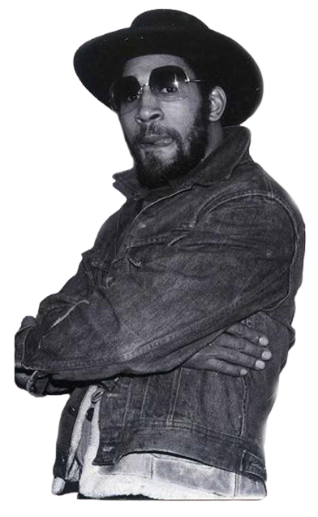

Scroller vers le bas pour découvrir
Le mouvement remonte aux années 70 à 80, lorsque qu'il a prit forme, regroupant les conceptes suivant bien connus aujourd'hui :
- Le break
- Le graff
- Le DJ-ing (art de mixer chez le disc jockey)
- Le beatboxing
- Et le rap
Le premier personnage important, le père fondateur de la culture hip-hop, qui a vécu et participé à la naissance, c’est Kool Herc.
Click sur l'image
Tout d’abord avec le break, il organisait et mixait dans ses propres soirées, il les décorait de graffitis et avait même ses propres danseurs !